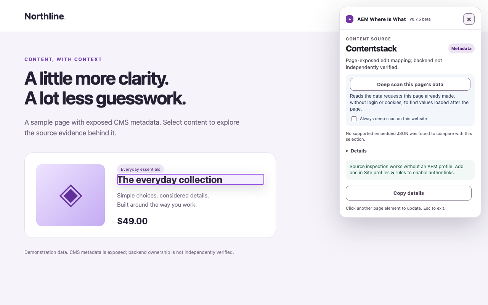
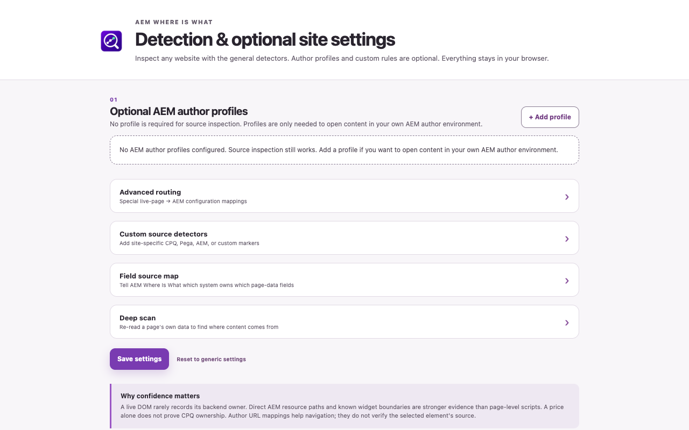
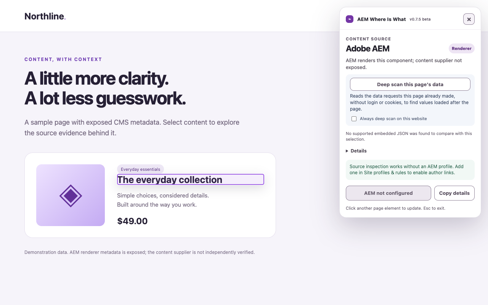
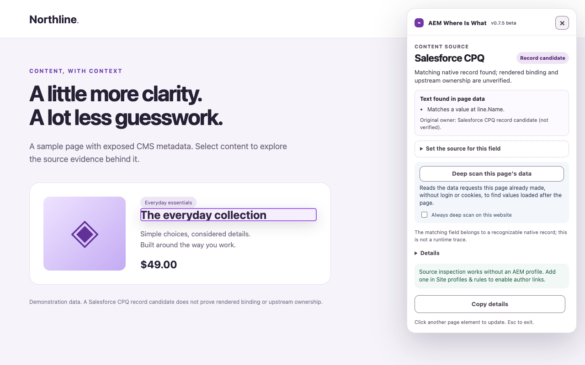

Follow the content. Find the evidence.
AEM Where Is What helps developers, content authors and QA teams investigate where selected webpage content comes from.
Click an element to inspect exposed CMS metadata, candidate fields in embedded page data, supported experiment signals and asset-delivery clues. Optional AEM author profiles let you open your own configured author environment.
A matching value is a candidate, not proof of backend ownership. When there is insufficient evidence, AEM Where Is What reports “Source not verified”.
These screenshots show source evidence on demonstration content, including Adobe AEM and Salesforce CPQ record candidates, plus the settings screen.




Inspection starts when you invoke it. Analysis runs in your browser, with no developer-operated analytics or remote analysis service. Optional deep scan can re-request the inspected website's resources without cookies or credentials. Local settings and a compact recent inspection summary stay on your device.